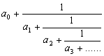
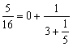
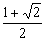

連續分式
程式編寫日期: 2006年4月4日
注意: 在輸入程式前請先按 1.1 SHIFT Min MODE 1 DEC MODE 0 確保程式能正確輸入。
程式長度: 9步
| MR | - | MODE 1 | MODE 0 | HLT |
| = | 1 / x | Min | x > 0 | MODE . |
註: 連續分式的形式如下:

例題: 以連續分式表示 π 值。
按 π SHIFT Min
再按 P1 (顯示3) RUN (顯示7) RUN (顯示15) RUN (顯示1) RUN (顯示292)........
所以答案為
例題2: 以連續分式表示 5/16 值。
按 5 ab/c 16 SHIFT Min
再按 P1 (顯示0) RUN (顯示3) RUN (顯示5) RUN (顯示-E-表示計算完結)
所以答案為

例題3: 以連續分式表示 25/16 值。
按 25 ab/c 16 SHIFT Min
再按 P1 (顯示1) RUN (顯示1) RUN (顯示1) RUN (顯示3)
RUN (顯示2) RUN (顯示-E-表示計算完結)
所以答案為

例題4: 試計算以下算式的連續分式

按 1 + 2 √ = ÷ 2 = SHIFT Min
再按 P1 (顯示1) RUN (顯示4) RUN (顯示1) RUN (顯示4) ....
所以答案為

注意: 輸入的數必須為正數，否則計算將會錯誤。輸入有理數請以分數形式輸入，否則計算可能存在誤差。
註: 這個程亦可以計算無理數的連續分式，不過由於計數機的準確度有限，誤差會隨計算的項數而增加，因此較後的項(對整個的值影響很少的項)有可能出現錯誤。